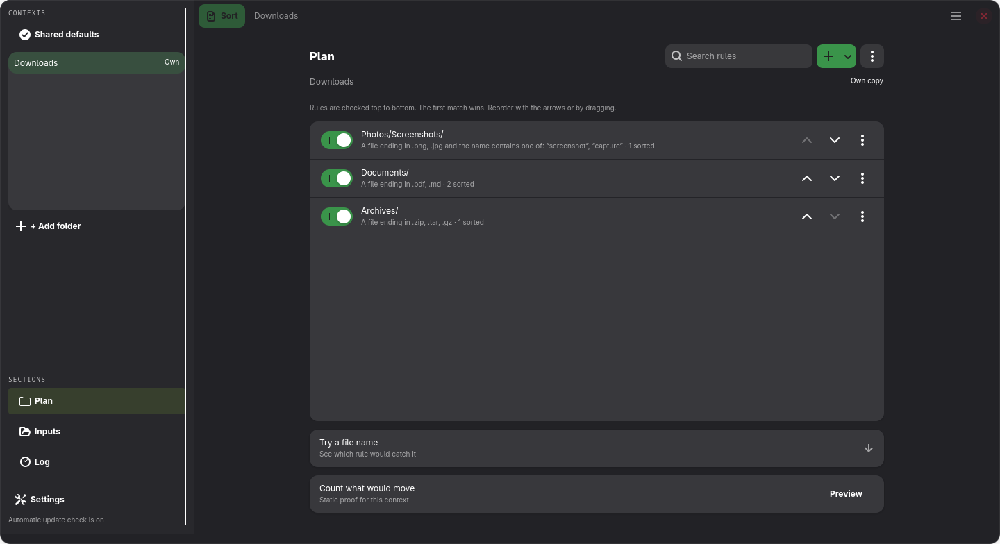
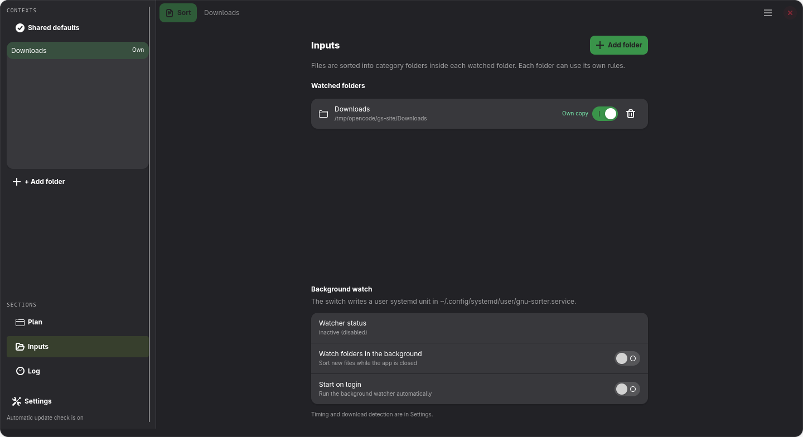

Each folder gets its own rules, and each move is recorded.
Funnel watches the folders you add. A rule matches a file by extension or by a pattern in its name, sends it to one destination, and writes the move to the journal.
A rule has to match, and it has one destination.
A rule belongs to a folder. Give it a list of extensions, a pattern in the name, or both, and name the folder that receives the match.
Both conditions are on in this rule. Match-all mode requires the extension and the name pattern; switch it off and either condition is enough. A name pattern is a regular expression, so ^IMG_ anchors the match at the start of the file name.
Rules in a folder run in list order, and the first match wins. Put a .png rule above the photos rule and every PNG goes to the .png destination; the photos rule below it never sees those files. Move a rule up or down, or change its priority, to set the order.
Funnel checks the list from the top down. The first matching rule wins, and the rules below it are not consulted.
A new file moves after it stops changing.
Funnel watches the folders you add. When a file lands, it waits for the write to finish, matches the file against that folder's rules, and moves it once.
A download that is still growing does not pass the stability check, so Funnel leaves it in place and checks again. The same applies to a copy in progress or a file another program still holds open. The move starts only when the size and modification time have stopped changing.
If the destination already holds a file with that name, the default is to rename the incoming file. overwrite and skip are the other two conflict modes. Whichever mode runs, the journal keeps a record of the move so it can be reversed.
- Trigger
- A file created or copied into a folder Funnel watches
- Stability
- Size and modification time stop changing before the move
- In progress
- A file still being written is skipped and checked again
- One move
- One matching rule, one move, one journal entry per file
- Name clash
- Rename by default; overwrite and skip are the other modes
- Existing files
gnu-sorter --sweepapplies the same rules once
A folder keeps its own rules or follows the template.
The template is the shared list. A folder can read it as it stands, or keep a list that belongs to that folder alone.
A folder on the template reads the shared list, so an edit to the template reaches every folder that follows it. A folder with its own rules reads its own list, and the template can change without touching it. The Rules page shows which state a folder is in.
Adding a rule to one folder gives that folder its own list. --attach-rules --root ~/Downloads drops that list and puts the folder back on the template. To detach it again, add a rule under that root from the command line or the Rules page.
A new list can start from a preset: GNOME, Photography, Code projects, or Empty. Priority is per list, and the first match wins inside each folder's list.
The label next to a folder means the list below it belongs to that folder, not to the template. Edits stay in that folder until the rules are attached to the template again.
| Command | Effect |
|---|---|
gnu-sorter --add-rule <name> --folder <folder> --root <path> | Add a rule to one folder's own list. |
gnu-sorter --list-rules --root ~/Downloads | Print the rules that folder uses. |
gnu-sorter --attach-rules --root ~/Downloads | Drop the folder's list and follow the template. |
The wizard asks four questions, then shows the files.
Each step sets one part of the rule. The last step lists the files the rule would move before you save it.

-
01
Catch
Start from a file type or set the extensions and name pattern yourself. Patterns are regular expressions.
-
02
Destination
Keep the suggested folder name or type another. The name is relative to the folder you are sorting.
-
03
Conditions
Set size and age limits, an exclusion pattern, and whether every condition has to match.
-
04
Proof
See the files this rule would move and the ones it would leave, then save or discard it.
The advanced editor shows the same rule as JSON. It is the escape hatch for a field the four steps do not cover, and the same document --export-rules writes. A rule edited there behaves the same as one built in the wizard.
Run sweeps and restores from a script.
Every flag below acts on the rules in the app. A script can sweep a folder, read the journal or export the list without opening the window.
gnu-sorter --sweep
gnu-sorter --watch
gnu-sorter --journal --since 7d
gnu-sorter --undo-last 1
gnu-sorter --restore --dry-run
gnu-sorter --export-rules rules.json
gnu-sorter --import-rules rules.json--sweep sorts the files already in the configured folders. --watch keeps the watcher running and sorts what arrives. --journal --since 7d prints the moves recorded in the last seven days. --undo-last 1 reverses the most recent move; a larger number reverses more of them.
--restore --dry-run prints the restore plan and moves nothing until the flag is removed. --export-rules rules.json writes a list to disk, and --import-rules rules.json reads one back on another machine. The app and the CLI read one rule set, so a sweep from a terminal uses the list you edited on the Rules page.
Moves are appended to ~/.local/share/gnu-sorter/history.log. The journal is a text log, so a script can read it without the app running.
GPL-3.0, with the source on GitHub.
The Linux app uses GTK4 and libadwaita. The Windows build uses WinUI 3 with four areas: Folders, Rules, Activity and Settings.
The source, the issue tracker and the releases are on GitHub. The Windows build has its own repository. Both builds share the rule format and the GPL-3.0 license.
Screens from the Linux build.
Four screens from the current GTK4 app: Plan, Inputs, Log and the rule wizard. The Windows build uses WinUI 3 with its own four-area layout.



Install from the project repository.
The project publishes its own Flatpak remote. Three commands add the remote, install the app and start it.
flatpak remote-add --if-not-exists funnel \
https://notmicrosoft2000-cmd.github.io/gnu-sorter/flatpak/io.neptunepc.Funnel.flatpakrepo
flatpak install funnel io.neptunepc.Funnel
flatpak run io.neptunepc.FunnelThe Flatpak build leaves out the optional tray helper and has no built-in autostart. For a user-local install without root, clone the repository and run ./install.sh; other install paths are listed on the download page.